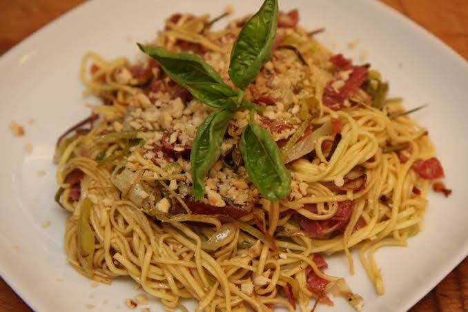

Creamy chili oil pasta

This might be the best thing I have ever eaten. It is supremely creamy and you can taste the chili oil very well, while not being overwhelmingly spicy. Goes well with chicken.
You can use any type of pasta; the recipe recommends noodles, but I used spaghetti and it was amazing. I haven't yet tried adding eggs to it, but I'm sure they would pair well.
Ingredients:
- 500g noodles (or pasta)
- Half cup heavy cream
- 2 tbsp soy sauce
- 4 tbsp chili oil
- 2 tsp sugar
- 4 tbsp reserved water
Optional:
- Sesame seeds
- Scallions
Steps:
- Bring a pot of water to a boil and cook your noodles until about 1 minute before al dente. Reserve a few tablespoons of noodle water, then drain.
- In a pan over medium heat, combine heavy cream, soy sauce, chili oil, and sugar. Bring to a light simmer.
- Add the noodles and a bit of reserved noodle water. Toss continuously until the sauce thickens slightly and clings to the noodles.
- Serve the noodles in a bowl and optionally garnish with sesame seeds and scallions.
Home